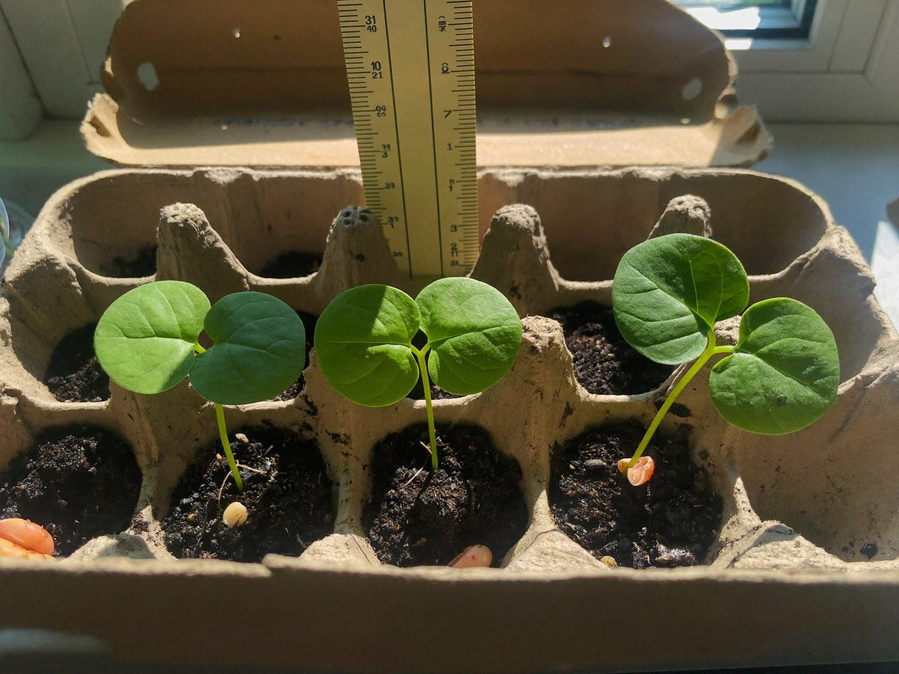

전체 단원 › 실험·활동 › 3학년 1학기 과학
달걀판 강낭콩 키우기

종이 달걀판에 강낭콩을 심어 싹이 트고 자라는 과정을 날마다 재고 기록해요.
심기 20분 · 관찰 4주 · 난이도 ★☆☆ 쉬움
준비물
- 종이 달걀판 — 칸마다 흙을 담아 작은 화분으로 써요
- 강낭콩 6~8알 — 마트에서 파는 마른 강낭콩도 싹이 터요
- 흙 — 화분 흙이나 마당 흙
- 분무기나 컵 — 물 주기용
- 자 — 자란 키를 재요
- 가위 — 달걀판을 칸째로 잘라 옮겨 심어요
- 쟁반 — 달걀판 아래에 받쳐 물이 새지 않게 해요
- 큰 화분 (또는 페트병 화분) — 본잎이 나오면 옮겨 심어요
- 키 기록표 도안 — 아래에서 내려받아요
실험 방법
- 콩 불리기
강낭콩을 하룻밤 물에 담가 불려요. 몇 알은 그대로 두고 비교해도 좋아요. - 심기
달걀판 칸에 흙을 채우고 콩을 손가락 한 마디 깊이로 심어요. 칸마다 번호를 적어요. - 물 주기
흙이 마르지 않게 하루 한 번 물을 줘요. 달걀판 아래에 쟁반을 받쳐요. - 싹 관찰하기
뿌리, 떡잎, 본잎이 나오는 순서를 관찰하고 날짜를 적어요. - 화분으로 옮기기
본잎이 나오면 달걀판 칸째로 잘라 큰 화분이나 페트병 화분에 옮겨 심어요. 종이가 흙 속에서 썩어 없어져요.
관찰해 봐요
- 뿌리와 줄기 중 무엇이 먼저 나오나요?
- 떡잎은 자라면서 어떻게 변하나요?
- 햇빛이 드는 칸과 그늘진 칸의 강낭콩은 어떻게 다르게 자라나요?
왜 그럴까?
씨앗 속에는 아기 식물과 처음 먹을 양분이 들어 있어요. 물을 먹으면 씨앗이 부풀고 뿌리가 먼저 나와요. 떡잎은 씨앗 속 양분 주머니라서, 본잎이 자라면 점점 쪼그라들어요.
학교 교육과정 연결
- [4과04-03] 생물의 한살이 과정을 조사하여 생물에 따라 한살이의 유형이 다양함을 소개하는 자료를 만들어 공유할 수 있다.
- [4과04-02] 식물이 자라는 데 필요한 조건을 찾는 실험을 설계하여 수행할 수 있다.